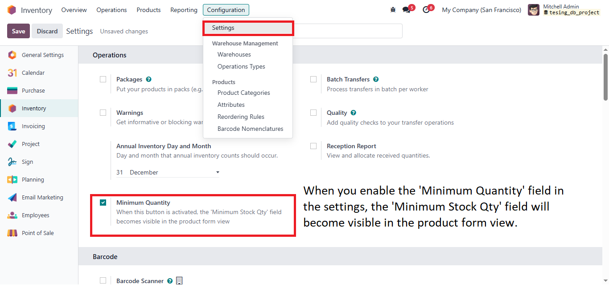
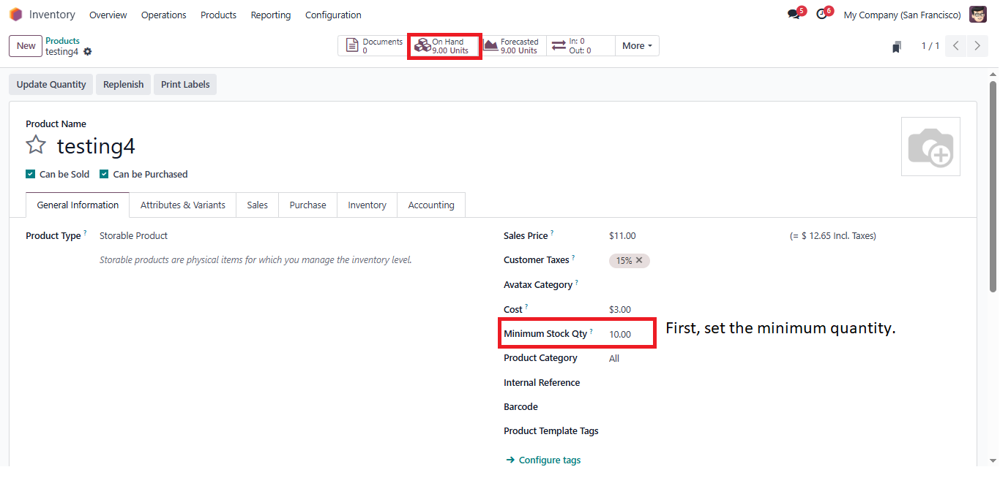
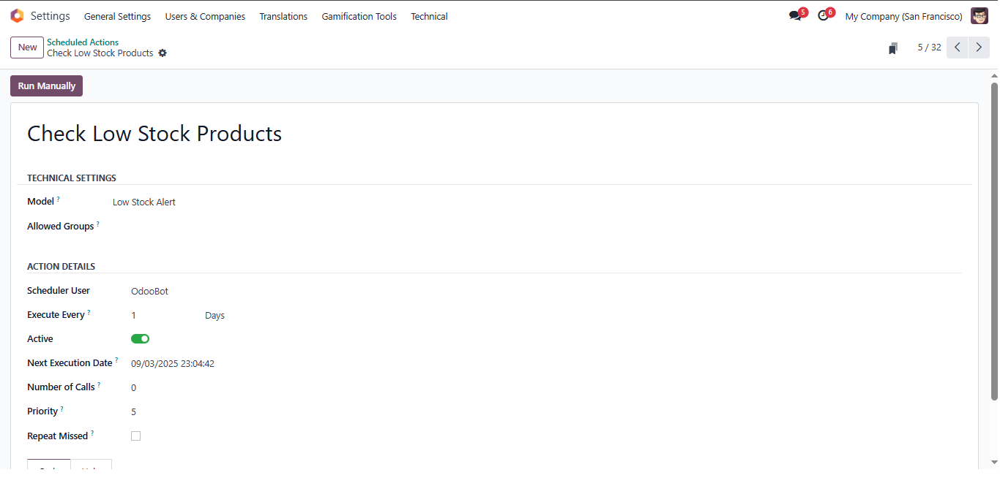
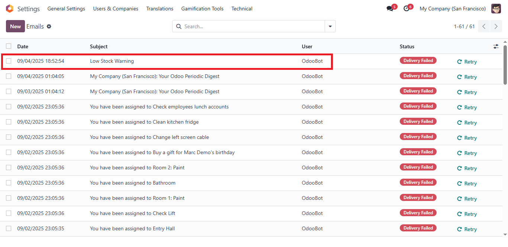
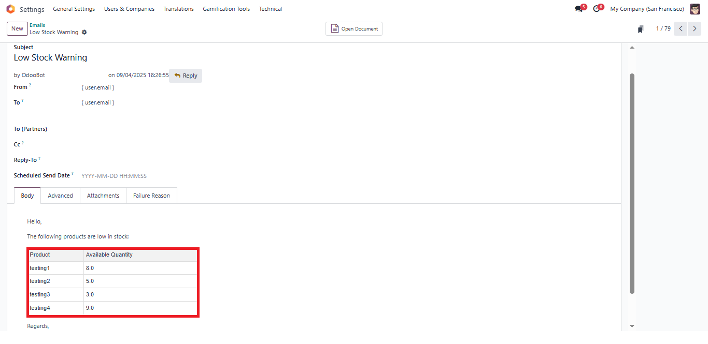
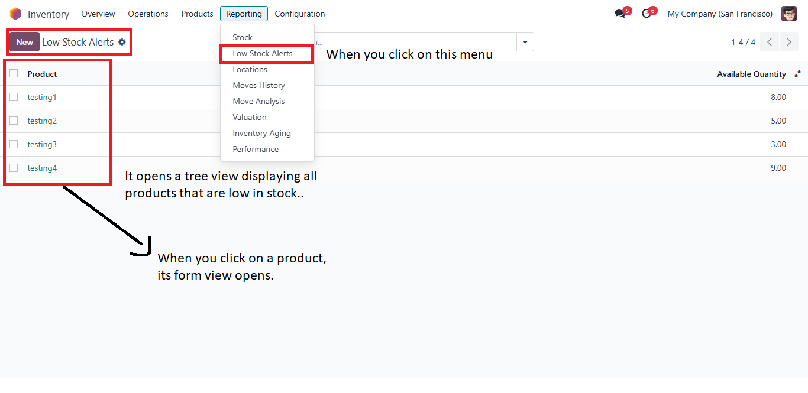
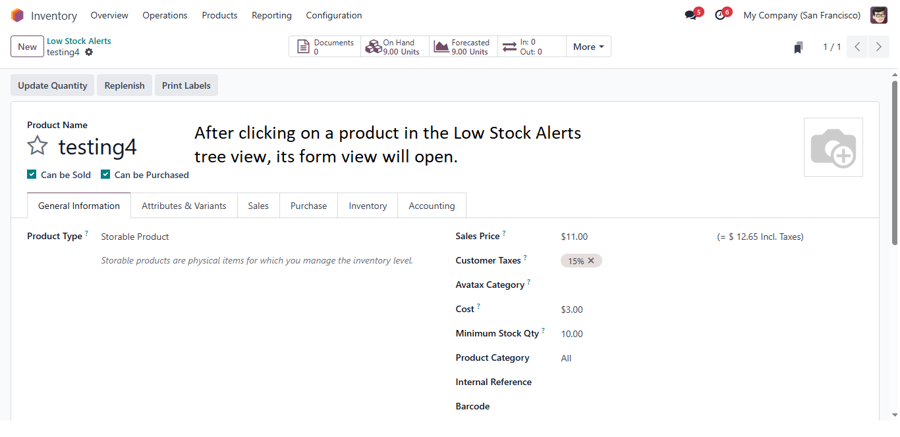

This alert notifies you when product stock levels fall below the minimum threshold defined for each product. It helps ensure timely reordering and avoids stockouts, keeping your inventory under control
When you enable the 'Min Qty' field in the settings, the 'Minimum Stock Qty' field will become visible in the product form view.
First, you need to fill in the Minimum Stock Quantity field in the product form.
When the Minimum Stock Quantity is greater than the Available Quantity, the scheduled action will run on a daily basis.
After the scheduled action runs, an email is sent containing a list of products that are low in stock. Additionally, a new menu named Low Stock Alerts appears under the Stock section in the Reporting menu. This menu opens a tree view that displays all the low stock products listed in the email. Clicking on any product in the tree view will open its corresponding product form view.
   
Muhammad Umar
Odoo Developer
Email: umar200ak@gmail.com /
Github